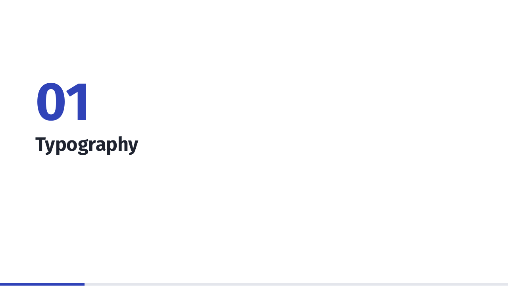
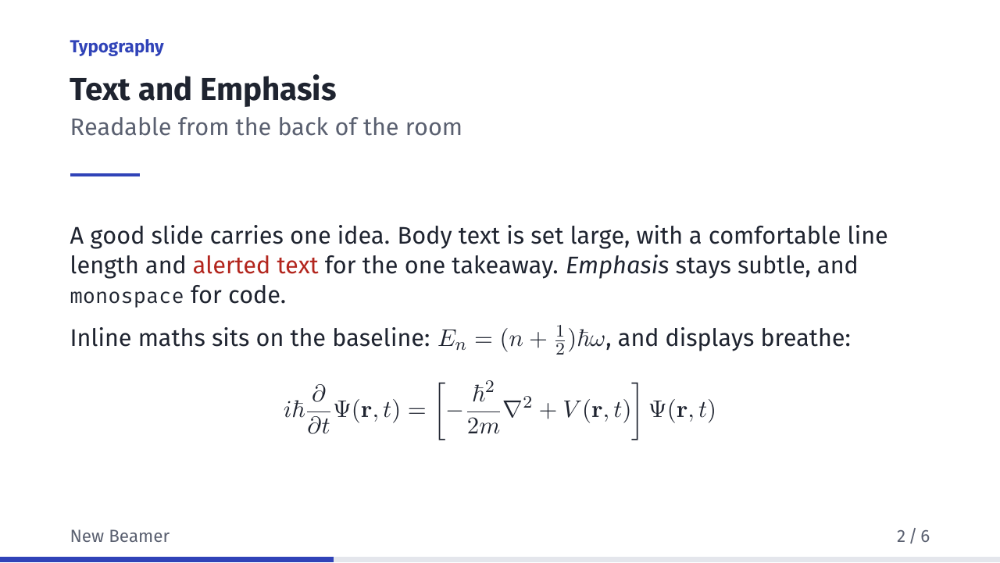
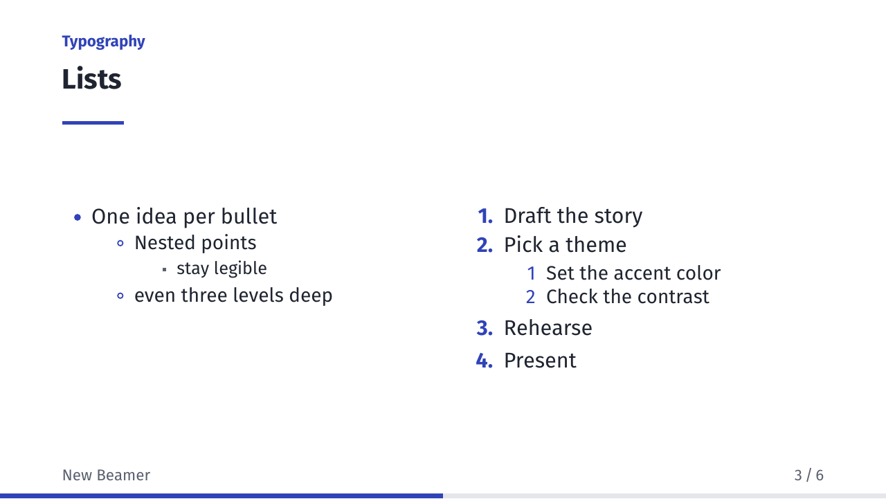

Variants

variant = light (default)
variant = paper 
variant = dark Inside the deck



enumerate and itemizeUsage
\documentclass{beamer}
\usetheme[variant=dark]{Meridian}
Options
| Option | Values | What it does |
|---|---|---|
variant |
light, dark, paper |
Colour Scheme |
accent |
a hex colour | Replaces a variant's accent colour |
Fonts
Meridian uses Fira Sans and Fira Mono. On TeX Live:
tlmgr install fira